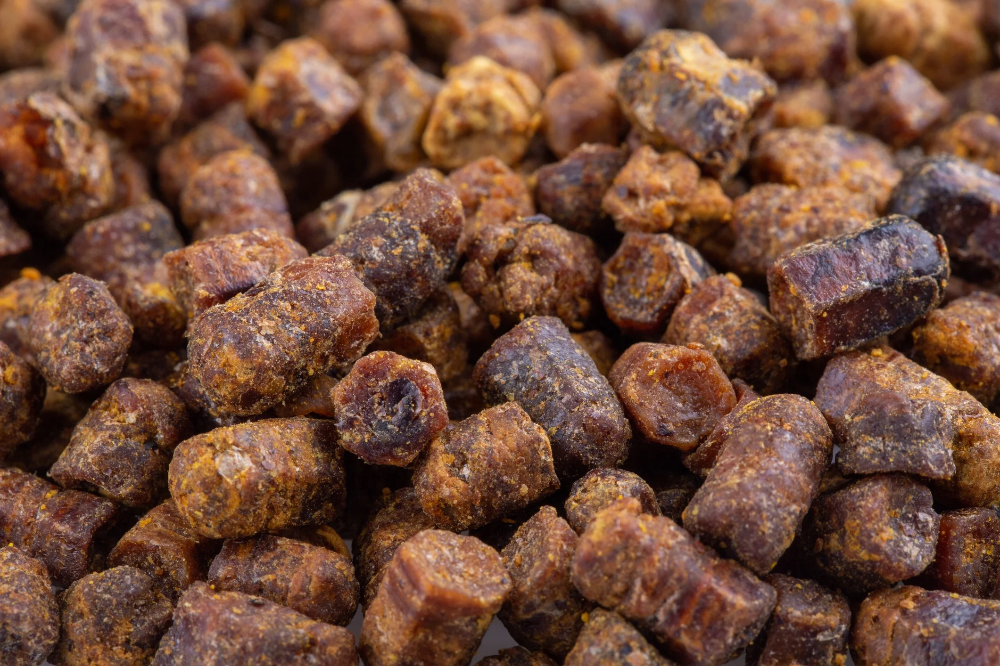

- Antibacterial — fights bacteria.
- Antiviral — suppresses virus development.
- Antifungal — eliminates fungal infections.
- Anti-inflammatory — reduces inflammation.
- Immunostimulant — strengthens the immune system.
- Antioxidant — protects cells from damage.
- Healing — speeds up wound healing.
- Anesthetic — reduces pain.